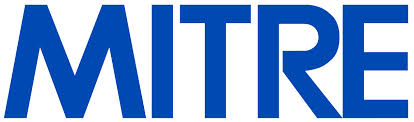

MITRE en SAIL
Na een opleiding te hebben genoten begon Diffie te werken bij MITRE. Diffie was tegen de Vietnamoorlog en door deze baan aan te nemen hoefde hij niet te vechten, dit bedrijf werd namelijk gefinancieerd door de overheid. In de periode dat hij hier werkte heeft hij geholpen met het ontwikkelen van Mathlab, de voorloper van het Macsyma.
In november 1969 vertrok hij naar de Stanford Artificial intelligence Laboratory, kortweg SAIL, om te werken aan LISP. Hier hielp hij met het creëren van het programma en leerde hij tegelijkertijd meer over computerbeveiliging en cryptografie. In 1973 verliet hij SAIL om zelfstandig onderzoek te gaan doen naar cryptografie.
Martin Hellman, Northern Telecom en Sun
In 1975 begon Diffie samen te werken met Martin Hellman. Samen met hem gaf hij kritiek op de encryptie die toendertijd gebruikt werd en ze ontwikkelde de zogenaamde Diffie-Hellman Key Exchange. Dit werkte veel beter om beveiligde berichten te sturen over een publiek netwerk. Hier hebben ze de Alan Turing Award 2015 mee gewonnen. In 1978 werd Diffie 'manager of secure system research bij Northern Telecom. Hier ging hij verder met beveiligingssystemen. In 1991 ging Diffie naar Sun Microsystems om daar te werken als 'distinguished engineer'. Later werd hij ook 'chief security officer' en 'vice president'bij Sun. Hier vertrok hij in 2009.
Afgelopen jaren
In 2008 een bezoekend professor bij de Royal Holloway University in Londen. Verder is hij twee jaar 'vice president' bij de ICANN